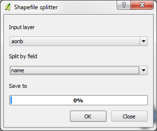

To use the plugin need to select it from the Plugin Menu.
The plugin will work out if any vector layers are open. If there are vector layers loaded into QGIS, the plugin will display a dialog like the one below:.
1. Shows a list of vector layers. Select the vector layer you would like to use.
2. Shows the fields within the layer selected in 1. Select the field you would like to split by.
3. Progress bar
4. OK button. Select this to perform the operation.
5. Close button. Select this to close the tool at any point.
Once you push the OK button, the tool will add a layer for each unique value in the column you selected. WARNING, this may take some time if it is a layer with a lot of data in it.
If you find bugs or have ideas for this plugin, contact James Stott ( jamesstott1@gmail.com ) or visit the plugins page on the QGIS Plugins website.